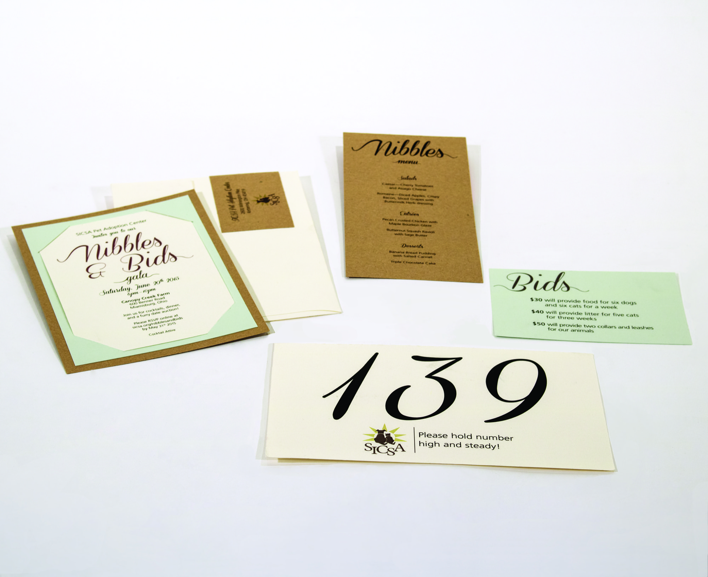

Invitations
Print & Invitation Design
This collection brings together a range of invitation and print design projects across two very different worlds. For SICSA, a pet adoption center in Dayton, Ohio, I designed a full suite of event materials for their fundraising gala including the invitation, menu, bid numbers, and auction item list. Every piece was designed to work together as a cohesive set that felt polished and event worthy while supporting such a meaningful cause. On the other side of the collection are baby shower and wedding invitation designs created for my Etsy shop, Certainly Cerny, and sold as digital downloads. These projects are where my love for print design really shows and they represent the range of work I have done outside of a traditional design role.
